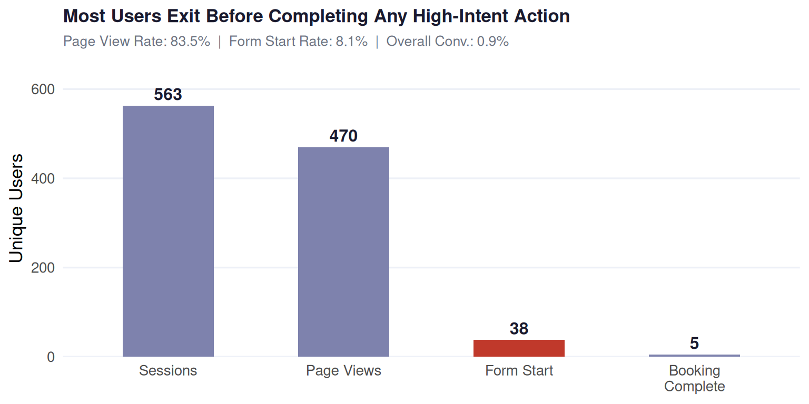
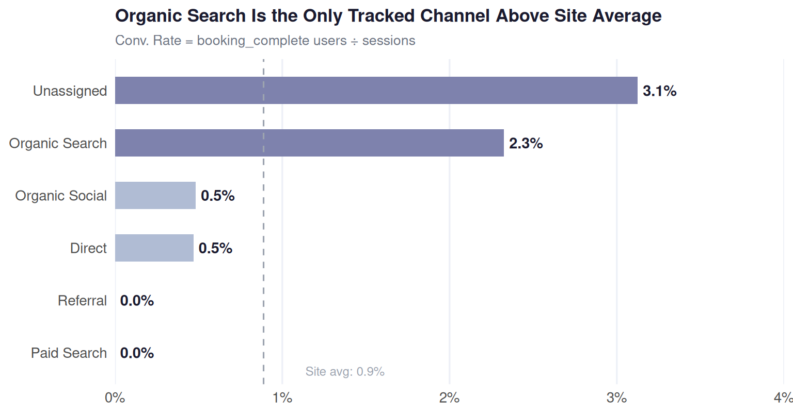

Website Behavior & Booking Funnel Optimization
Analytics Objective 5 | Google Analytics 4 | Jan 1 – Apr 21, 2026
Author
Kathleen Juarez
Published
May 5, 2026
Analytics Objective 5
Website Behavior &
Booking Funnel Optimization
Using GA4 event-level data to find where users drop off, what creates friction, and what drives bookings.
📅 Jan 1 – Apr 21, 2026 563 Sessions 6 Traffic Channels R / tidyverse
Methodology
Descriptive Funnel Analysis — GA4 event-level data, total users metric throughout
Funnel Stages (Dependent Variable)
| # | Stage | Description |
|---|---|---|
| 1 | Sessions | Entry point |
| 2 | Page Views | Surface engagement |
| 3 | Form Start | Booking initiated |
| 4 | Booking Complete | Conversion |
Traffic Channels (Independent Variable)
- Direct
- Organic Search
- Organic Social
- Referral
- Unassigned
- Paid Search
The Core Problem
91.9% drop-off from page views to form starts — the critical friction point, consistent across all six channels
Not All Traffic Is Equal

Funnel Performance by Channel
| Traffic Channel | Sessions | Page Views | Contact Us | Form Starts | Sched. Appts | Conv. Rate |
|---|---|---|---|---|---|---|
| Unassigned | 32 | 29 | 2 | 3 | 2 | 3.1% |
| Organic Search | 86 | 61 | 4 | 4 | 4 | 2.3% |
| Organic Social | 207 | 203 | 2 | 12 | 3 | 0.5% |
| Direct | 213 | 167 | 9 | 18 | 6 | 0.5% |
| Referral | 21 | 6 | 2 | 1 | 2 | 0.0% |
| Paid Search | 4 | 4 | 0 | 0 | 0 | 0.0% |
| TOTAL | 563 | 470 | 19 | 38 | 17 | 0.9% |
| Contact Us and Sched. Appts are high-intent signals (link clicks), not sequential funnel gates. |
Subgroup Validation
Drop-off from page views → form starts, confirmed across all channels
| Traffic Channel | Page Views | Form Starts | Form Start Rate | Drop-off Rate |
|---|---|---|---|---|
| Referral | 6 | 1 | 16.7% | 83.3% |
| Direct | 167 | 18 | 10.8% | 89.2% |
| Unassigned | 29 | 3 | 10.3% | 89.7% |
| Organic Search | 61 | 4 | 6.6% | 93.4% |
| Organic Social | 203 | 12 | 5.9% | 94.1% |
| Paid Search | 4 | 0 | 0.0% | 100.0% |
Drop-off exceeds 83% in every channel — confirming a structural on-site barrier, not a channel-specific issue
Strategic Recommendations
1 Redesign the Mid-Funnel Experience — Strengthen CTAs, sharpen the value proposition, and simplify the path to the booking form. Highest-leverage fix without additional spend.
2 Invest in Organic Search & SEO — Converts at 2.3%, more than 2× the site average. Shift content and budget toward this channel.
3 Audit UTM Tagging for Unassigned Traffic — The site’s highest-converting source (3.1%) is currently unlabeled. Classify it through proper UTM configuration and GA4 audit.
4 Deploy Purchase Event Tracking via GTM — Track completed purchases, not just bookings, to connect marketing to actual revenue outcomes.